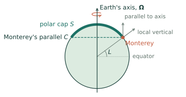
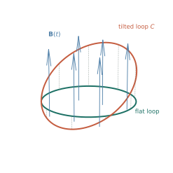
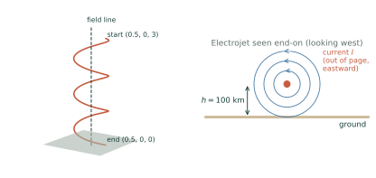
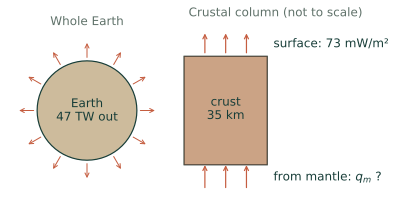

Enter fractions, decimals, pi, e, sqrt(...), sin(...), cos(...), exp(...), or log(...). Use ^ for powers and radians for angles. Vectors and bounds use commas. Decimal answers are checked to two decimal places (answers smaller than 0.1 need two significant digits); exact forms such as 6pi sqrt(37) are always fine. LaTeX such as \frac{1}{2}, \sqrt{2}, \pi, and \phi is also accepted. Equivalent expressions are accepted; potential functions may differ by a constant. Units are provided beside each input.
Hints and solutions are local worked guidance. They do not send messages to an AI service. Your inputs and notes stay in this browser; this is an ungraded practice site.
Earth turns once each sidereal day, carrying the air, the oceans, and Monterey Bay along with it. Seen from space, everything on the planet shares one rigid rotation. That rotation has a curl, and the curl’s local vertical part is what slowly turns the swing of a Foucault pendulum and gives large ocean eddies and storms their preferred direction of spin.
Earth and everything on it rotate rigidly; winds and currents relative to the ground are ignored
Earth is a perfect sphere centred at the origin, with the \(z\)-axis through the North Pole
3So the model is
Velocity seen from space: \(\mathbf v=\boldsymbol\Omega\times\mathbf r\) with \(\boldsymbol\Omega=(0,0,\Omega)\)
Monterey’s parallel \(C\): the circle \(x^2+y^2=(R\cos L)^2\), \(z=R\sin L\)
Polar cap \(S\): the part of \(x^2+y^2+z^2=R^2\) with \(z\ge R\sin L\)

The model: Earth rotating rigidly about the \(z\)-axis, Monterey’s parallel \(C\) at latitude \(L\), and the polar cap \(S\) (teal) that it bounds.
First, on paper
Check that \(\boldsymbol\Omega=(0,0,\Omega)\) gives \(\mathbf v=\boldsymbol\Omega\times\mathbf r=\Omega(-y,x,0)\). The parallel \(C\) through Monterey is the circle at height \(z=R\sin L\). Earth carries it eastward: show that this is counterclockwise seen from above the North Pole, and that the compatible normal on the polar cap \(S\) north of \(C\) points away from Earth’s centre. Compute the flux of \(\nabla\times\mathbf v\) through \(S\) three ways: directly, using \(\mathbf n=\mathbf r/R\) and the cap’s symmetry about the axis (with \(dS=R^2\sin\phi\,d\phi\,d\theta\) and the right range of \(\phi\)); through the flat disk spanning \(C\); and as the circulation around \(C\). Then take a tiny horizontal circle of radius \(\epsilon\) centred at Monterey: what does (circulation)/(area) tend to as \(\epsilon\to0\)? Use it to predict how long a Foucault pendulum at Monterey would take to turn its swing once around (it turns at \(\Omega\sin L\)).
Whiteboard kit ↓An image with the diagram, model, this task, and blank work areas. Add it to your group’s shared whiteboard as a background.
aFor \(\mathbf v=w(-y,x,0)\) (rotation at rate \(w\) about the \(z\)-axis), enter \(\nabla\times\mathbf v\).
A step in the right direction
bFind the circulation of Earth’s rotational velocity around Monterey’s parallel (36.605° N), taken eastward. Give km²/s.
A step in the right direction
cA tiny paddle wheel is carried by the rigidly rotating air at Monterey. Its spin rate about its axle is half the component of the curl along the axle. Which axle direction makes it spin fastest?
A step in the right direction
View full solution +
Follow the reasoning
\(\nabla\times\mathbf v=\big(0-0,\ 0-0,\ \partial_x(\Omega x)-\partial_y(-\Omega y)\big)=(0,0,2\Omega)=2\boldsymbol\Omega\) at every point: twice the angular velocity.
\(C\): \((R\cos L\cos t,R\cos L\sin t,R\sin L)\) with \(t\) increasing eastward, counterclockwise seen from above. With the thumb pointing away from Earth’s centre on the cap (upward on the flat disk), the fingers curl this way, so these orientations are compatible.
Directly: \((\nabla\times\mathbf v)\cdot\mathbf n=2\Omega z/R\) and the cap is \(0\le\phi\le\pi/2-L\), so \[\iint_S\frac{2\Omega z}{R}dS=\frac{2\Omega}{R}\int_0^{2\pi}\!\!\int_0^{\pi/2-L}R^3\cos\phi\sin\phi\,d\phi\,d\theta=2\pi\Omega R^2\cos^2L.\] Flat disk: \(2\Omega\cdot\pi(R\cos L)^2\). Circulation: speed \(\Omega R\cos L\) times length \(2\pi R\cos L\). All three give \(2\pi(7.292115\times10^{-5})(6371)^2\cos^2(36.605^\circ)\approx11{,}984.67\) km2/s.
For a tiny horizontal circle at Monterey, (circulation)/(area) \(\to(\nabla\times\mathbf v)\cdot\mathbf n_{\rm up}=2\Omega\sin L\approx8.70\times10^{-5}\) s−1, where \(\mathbf n_{\rm up}=\mathbf r/R\) makes angle \(90^\circ-L\) with the axis. A Foucault pendulum turns at half that, \(\Omega\sin L\), so once around takes \(2\pi/(\Omega\sin L)\approx1.445\times10^5\) s \(\approx40.1\) hours.
A paddle wheel with unit axle \(\mathbf u\) spins at \(\tfrac12(\nabla\times\mathbf v)\cdot\mathbf u=\Omega\,\mathbf k\cdot\mathbf u\): fastest (\(\Omega\)) for an axle parallel to Earth’s axis, \(\Omega\sin L\) for a vertical axle, and zero for any axle perpendicular to Earth’s axis, such as one pointing east.
c. Parallel to Earth's axis: pointing north, tilted up 36.6\(^\circ\) from the horizontal
Discussion
At the equator the local vertical is perpendicular to Earth’s axis, so the vertical component of the curl, \(2\Omega\sin0\), is zero and a Foucault pendulum’s swing does not turn. In the Southern Hemisphere sin L < 0, so it turns the other way (counterclockwise seen from above); at the South Pole it turns once per sidereal day, \(2\pi/\Omega\approx23.93\) hours.
Think it through
What is the vertical component of the curl at the equator, and what would a Foucault pendulum there do? What happens in Antarctica?
Saved on this browser · Discussion prompt, not automatically graded
Lay a phone on a Qi charging pad and it charges with no plug. A coil in the pad drives a rapidly oscillating magnetic field; the changing field creates a circulating electric field, which pushes current around a coil in the phone. Faraday’s law, written in the language of Stokes’ theorem, says exactly how much push the phone gets.
Building the model
1From the real world
Qi reference transmitter design A2: coil outer diameter \(40\) mm, inner diameter \(19\) mm, \(2 imes10\) turns
Over the coil the magnetic field is vertical and uniform: \(\mathbf B=(0,0,B(t))\) with \(B(t)=0.001\sin(2\pi\cdot140000\,t)\) T
The receiver loop has a single turn; edge effects are ignored
3So the model is
Faraday’s law: \(\nabla\times\mathbf E=-\partial\mathbf B/\partial t\); with \(b=B^\prime(t)\) (T/s), the induced field is \(\mathbf E=\tfrac b2(y,-x,0)\) V/m
EMF of a loop \(=\oint\mathbf E\cdot d\mathbf r\)
Tilted loop \(C\): where the plane \(z=0.004+0.36y\) meets the cylinder \(x^2+y^2=0.02^2\) (metres), counterclockwise seen from above

The model: a uniform vertical field over the pad’s coil, the flat loop at \(z=0\), and the tilted loop \(C\) on the cylinder \(x^2+y^2=0.02^2\).
First, on paper
Check that the model field satisfies Faraday’s law \(\nabla\times\mathbf E=-\partial\mathbf B/\partial t\). Parametrize the flat loop \(x^2+y^2=0.02^2\), \(z=0\), counterclockwise seen from above, compute \(\oint\mathbf E\cdot d\mathbf r\) directly, and confirm it with Stokes’ theorem on the flat disk, stating which normal the right-hand rule pairs with this direction. Explain why this loop, whose plane is perpendicular to \(\nabla\times\mathbf E\), has nonzero circulation, while a loop standing vertically in the plane \(x=0\) (a phone on its edge) has none. For the tilted loop \(C\), describe its shape, explain why a direct parametrization is unpleasant, choose the planar surface it bounds, and write that surface’s upward vector area element. Why does the answer not depend on the tilt, even though \(C\) is longer than the flat circle?
Whiteboard kit ↓An image with the diagram, model, this task, and blank work areas. Add it to your group’s shared whiteboard as a background.
aEnter \(\nabla\times\mathbf E\) for \(\mathbf E=\tfrac b2(y,-x,0)\).
A step in the right direction
bFind \(\oint\mathbf E\cdot d\mathbf r\) around the flat loop of radius 0.02 m, counterclockwise seen from above, as a function of b.
A step in the right direction
cFor the tilted loop C, find the peak size of the EMF (the circulation of E) during a cycle, in volts.
A step in the right direction
View full solution +
Follow the reasoning
\(\nabla\times\mathbf E=\big(0,\,0,\,\partial_x(-bx/2)-\partial_y(by/2)\big)=(0,0,-b)=-\partial\mathbf B/\partial t\), so the model field obeys Faraday’s law.
On \(\mathbf r(t)=(0.02\cos t,0.02\sin t,0)\), \(\mathbf E\cdot\mathbf r^\prime=\tfrac b2\big(0.02\sin t(-0.02\sin t)-0.02\cos t(0.02\cos t)\big)=-\tfrac b2(0.0004)\), so \(\oint\mathbf E\cdot d\mathbf r=-0.0004\pi b\) V. Stokes: counterclockwise from above pairs with the upward normal \(\mathbf k\), and \((\nabla\times\mathbf E)\cdot\mathbf k=-b\) times the area \(0.0004\pi\) gives the same.
This loop’s normal is parallel to \(\nabla\times\mathbf E\), the best case. A loop in the plane \(x=0\) has normal \((1,0,0)\), perpendicular to \(\nabla\times\mathbf E\), so the flux through its disk, and hence its EMF, is \(0\): an upright phone does not charge.
\(C\) is an ellipse in the tilted plane whose shadow is the circle of radius \(0.02\); parametrizing it means carrying \(z=0.004+0.36\cdot0.02\sin t\) through the dot product. Instead take the planar patch \(z=0.004+0.36y\) over the disk, with upward element \((0,-0.36,1)\,dA\): \((\nabla\times\mathbf E)\cdot(0,-0.36,1)=-b\), so the EMF is \(-b\pi(0.02)^2\), the same as the flat loop. Only the vertical component of the vector area meets the vertical curl.
With \(B=0.001\sin(2\pi\cdot140000\,t)\), \(|b|\) peaks at \(0.001(2\pi)(140000)\approx879.6\) T/s, so the peak EMF is \(879.6\times\pi(0.02)^2\approx1.105\) V per turn.
Final answers
a.\(\left(0,\ 0,\ - b\right)\) V/m2
b.\(- 0.0004 \pi b\) V
c.\(0.112 \pi^{2}\) V
Discussion
Each turn is a loop with the same flux change, so the EMF is multiplied by the number of turns. A circle of radius r tilted by 30° has vector area πr² n with a vertical component πr² cos 30°, so the flux of the vertical field, and the EMF, drop by the factor cos 30° ≈ 0.87. The model loop C instead kept a full disk as its shadow, which is why its EMF did not change.
Think it through
A real receiver coil has several turns, and a phone may lie tilted on the pad as a whole. How does the EMF scale with the number of turns, and why would a circular coil tilted by 30° get less EMF than the model loop C?
Saved on this browser · Discussion prompt, not automatically graded
The Large Hadron Collider at CERN, on the French–Swiss border, steers two proton beams around a 27 km ring with 1232 superconducting dipole magnets and focuses them with hundreds of quadrupole magnets. Inside the beam pipe there is no current and, as everywhere in nature, no magnetic monopoles. Those two facts decide which magnetic fields are possible at all, and they explain why no single magnet can focus a beam in every direction at once.
Building the model
1From the real world
Ring circumference \(26{,}658.883\) m; \(1232\) main dipoles with field \(8.33\) T
\(408\) main arc quadrupoles, nominal gradient \(223\) T/m
Beam screen in the arcs: \(36.9\) mm wide, \(46.5\) mm high
No current flows inside the beam screen, so there \(\nabla\cdot\mathbf B=0\) and \(\nabla\times\mathbf B=\mathbf 0\)
Magnet fields are ideal and independent of position along the beam
A rectangular search coil (hypothetical) lies in the plane \(y=0\), \(0\le x\le0.017\) m, along \(1\) m of a quadrupole
3So the model is
Beam along \(+z\); dipole field \((0,8.33,0)\) T; quadrupole field \(\mathbf B=G(y,x,0)\), \(G=223\) T/m, \(x,y\) in metres
Magnetic force on a proton moving along \(+z\): proportional to \(\mathbf k\times\mathbf B\)
Vector potential: any \(\mathbf A\) with \(\nabla\times\mathbf A=\mathbf B\)
Field lines of \(\mathbf B=G(y,x,0)\) in the beam-pipe cross-section (millimetres), the \(36.9\times46.5\) mm beam screen, and the search coil (orange) in the plane \(y=0\).
First, on paper
Prove that \(\nabla\cdot(\nabla\times\mathbf F)=0\) for every \(C^2\) field \(\mathbf F\), and explain why a field with nonzero divergence can never be a curl, and so never a magnetic field. For each option in part (a), compute its divergence and curl. A proton moving along \(+z\) feels a force proportional to \(\mathbf k\times\mathbf B\): compute it for \(\mathbf B=G(y,x,0)\) and show that the quadrupole pushes protons toward the axis in one transverse direction and away from it in the other. To find \(\mathbf A\) in (b), write the three component equations of \(\nabla\times\mathbf A=\mathbf B\) with \(A_1=0\), integrate them in \(x\), and choose the leftover functions of \((y,z)\). Use Stokes’ theorem, after cutting a closed surface into two patches along a curve, to explain why the flux of any curl, and so of \(\mathbf B\), through every closed surface is \(0\). Finally, the quadrupole field is also a gradient: find \(\psi\) with \(\nabla\psi=\mathbf B\).
Whiteboard kit ↓An image with the diagram, model, this task, and blank work areas. Add it to your group’s shared whiteboard as a background.
aInside the beam screen there is no current, so a magnetic field there must have zero divergence and zero curl. With G = 223 T/m, which field is possible?
A step in the right direction
bFind a vector potential \(\mathbf A=(0,A_2,A_3)\) with \(\nabla\times\mathbf A=223\,(y,x,0)\). Enter its three components.
A step in the right direction
cA rectangular search coil lies in the plane y = 0, from x = 0 to x = 0.017 m and along 1 m of the quadrupole. Find the magnetic flux through it in the +y direction, in webers.
A step in the right direction
View full solution +
Follow the reasoning
\(\nabla\cdot(\nabla\times\mathbf F)=\partial_x(\partial_yF_3-\partial_zF_2)+\partial_y(\partial_zF_1-\partial_xF_3)+\partial_z(\partial_xF_2-\partial_yF_1)=0\) because mixed partials of \(C^2\) functions are equal. So \(\nabla\cdot\mathbf G\ne0\) rules out \(\mathbf G=\nabla\times\mathbf A\): \(G(x,y,0)\) has divergence \(2G\) and \(G(x,y,-z)\) has divergence \(G\). \(G(-y,x,0)\) has divergence \(0\) but curl \((0,0,2G)\ne\mathbf0\), which would require current. \(G(y,x,0)\) has divergence \(0\) and curl \((0-0,0-0,G-G)=\mathbf0\): possible.
\(\mathbf k\times G(y,x,0)=G(-x,y,0)\): a proton displaced in \(x\) is pushed back toward the axis (focusing), but one displaced in \(y\) is pushed farther out (defocusing). A linear field that focused in both directions would be \(\propto(-y,x,0)\) in \(\mathbf B\), which has nonzero curl. That is why accelerators alternate quadrupoles of opposite orientation.
With \(A_1=0\): \(\partial_yA_3-\partial_zA_2=Gy\), \(-\partial_xA_3=Gx\), \(\partial_xA_2=0\). So \(A_3=-Gx^2/2+g(y,z)\) and \(A_2=h(y,z)\), and the first equation becomes \(g_y-h_z=Gy\); take \(g=Gy^2/2\), \(h=0\). Then \(\mathbf A=\big(0,0,\tfrac{223}{2}(y^2-x^2)\big)\); check: \(\nabla\times\mathbf A=(223y,\ 223x,\ 0)\). (For the dipole, \((0,0,-8.33x)\) works.) Since \(\mathbf B=\nabla(Gxy)\) as well, the quadrupole field is both a gradient and a curl: in a current-free region it has zero curl and zero divergence.
Flux through the coil: \(\int_0^1\!\int_0^{0.017}223x\,dx\,dz=223(0.017)^2/2\approx0.0322\) Wb. Stokes check: with normal \(+\mathbf j\), the boundary runs up \(z\) along \(x=0\) (where \(A_3=0\)) and down \(z\) along \(x=0.017\), where \(A_3=-223(0.017)^2/2\), giving \(+223(0.017)^2/2\); the \(x\)-edges have \(\mathbf A\cdot d\mathbf r=0\).
For a closed surface, cut it along a closed curve into two patches. Stokes gives each patch’s flux of \(\nabla\times\mathbf A\) as the circulation of \(\mathbf A\) around the cut, traversed in opposite directions for the two patches, so the total is \(0\). Hence \(\mathbf B\) has zero flux through every closed surface: no magnetic monopoles.
Both. Its divergence and curl are zero. A vector potential is (0, 0, −8.33x) (curl = (0, 8.33, 0)), and a scalar potential is \(\psi=8.33y\). Any constant field is a gradient and a curl on all of R³.
Think it through
The LHC dipoles have field 8.33 T. Is the uniform field (0, 8.33, 0) a curl, a gradient, both, or neither? Give a vector potential and a scalar potential if they exist.
Saved on this browser · Discussion prompt, not automatically graded
The aurora over Alaska glows where fast electrons crash into the upper atmosphere. ESA’s Cluster satellites found that the electrons are first accelerated to energies of several thousand electronvolts in narrow electric structures thousands of kilometres up, while they spiral around Earth’s magnetic field lines. Lower down, the auroral electrojet, a current of up to half a million amperes, flows east–west near 100 km altitude, and its magnetic field reaches the ground.
Building the model
1From the real world
Auroral electrons are accelerated to several keV in structures starting several thousand km up
Auroral electrojet: mostly east–west near \(100\) km altitude, up to about half a million amperes
Units: lengths in thousands of km, energies in keV; the force field below stands in for a real acceleration structure
The spiral path is drawn hugely wider than a real gyration (metres) to be visible
Electrojet: a straight line current \(I=5\times10^5\) A along the \(x\)-axis (east) at height \(h=100\) km over flat ground; \(\mu_0=4\pi\times10^{-7}\) T·m/A
3So the model is
Electric force on the electron: \(\mathbf F=(2xz,\ 2yz,\ x^2+y^2-2)\) keV per \(1000\) km
Electrojet field (SI units): \(\mathbf B=\dfrac{\mu_0I}{2\pi}\,\dfrac{(0,\,-(z-h),\,y)}{y^2+(z-h)^2}\)

Left: the model spiral path (radius exaggerated). Right: the electrojet as a line current at \(h=100\) km, seen end-on, with circular field lines (not to scale).
First, on paper
Show that \(\nabla\times\mathbf F=\mathbf 0\) on all of \(\mathbb R^3\), then find \(f\) with \(\nabla f=\mathbf F\) by successive integration, carrying the unknown \(g(y,z)\) and then \(h(z)\) explicitly. Explain why the electron’s energy gain along the spiral needs only its endpoints, and check that the answer is “several keV.” For the electrojet field, show that \(\nabla\times\mathbf B=\mathbf 0\) everywhere off the current line; then compute \(\oint\mathbf B\cdot d\mathbf r\) around a circle of radius \(\rho\) about the line, and use it to find the field strength on the ground directly below the current, in nanotesla. Explain why zero curl and a nonzero circulation do not contradict each other here, and why the point-source field \(\mathbf r/|\mathbf r|^3\), defined on \(\mathbb R^3\) minus a point, has no such problem.
Whiteboard kit ↓An image with the diagram, model, this task, and blank work areas. Add it to your group’s shared whiteboard as a background.
aFind a potential \(f\) with \(\nabla f=\mathbf F=(2xz,\ 2yz,\ x^2+y^2-2)\).
A step in the right direction
bHow much energy (keV) does the electric force give the electron along the spiral c(t) = (0.5 cos t, 0.5 sin t, 3 − t/(2π)), 0 ≤ t ≤ 6π?
A step in the right direction
cWhich of these fields is a gradient on its whole domain?
A step in the right direction
View full solution +
Follow the reasoning
Componentwise: \(\partial_yF_3-\partial_zF_2=2y-2y=0\), \(\partial_zF_1-\partial_xF_3=2x-2x=0\), \(\partial_xF_2-\partial_yF_1=0\). So \(\mathbf F\) is conservative on the simply connected \(\mathbb R^3\).
\(f=\int2xz\,dx=x^2z+g(y,z)\); \(f_y=g_y=2yz\) gives \(g=y^2z+h(z)\); \(f_z=x^2+y^2+h^\prime(z)=x^2+y^2-2\) gives \(h=-2z+C\). So \(f=x^2z+y^2z-2z+C\).
By the fundamental theorem for line integrals the work is \(f(0.5,0,0)-f(0.5,0,3)=0-3(0.25-2)=5.25\) keV, “several keV,” no matter how many times the path winds. (Real gyration radii are metres, not hundreds of kilometres; it does not matter.)
For \(\mathbf B=\frac{\mu_0I}{2\pi}\frac{(0,-(z-h),y)}{y^2+(z-h)^2}\), the components give \(\nabla\times\mathbf B=\mathbf0\) wherever \(y^2+(z-h)^2\ne0\). On a circle of radius \(\rho\) about the line, \(\mathbf B\) is tangent with size \(\mu_0I/(2\pi\rho)\), so \(\oint\mathbf B\cdot d\mathbf r=\mu_0I\ne0\) (Ampère’s law). On the ground, \(\rho=h=10^5\) m: \(B=\frac{4\pi\times10^{-7}(5\times10^5)}{2\pi(10^5)}=10^{-6}\) T \(=1000\) nT.
No contradiction: the domain is \(\mathbb R^3\) minus a line, and a loop around the line cannot shrink to a point without crossing it, so zero curl does not force a potential (any “potential” would have to increase by \(\mu_0I\) each time around). Removing only a point leaves a simply connected domain, since loops slide off the point; \(\mathbf r/|\mathbf r|^3=\nabla(-1/|\mathbf r|)\). The rotation and induced fields have curl \((0,0,2\Omega)\) and \((0,0,-b)\), so they are not gradients.
Final answers
a.\(x^{2} z + y^{2} z - 2 z+C\) keV
b.\(5.25\) keV
c. The point-source field \(\mathbf r/|\mathbf r|^3\), on \(\mathbb R^3\) minus the origin
Discussion
At the ground point 100 km to the side, the distance to the current is \(\rho=\sqrt2\times100\) km, and the field is tangent to the circle of that radius with size \(\mu_0I/(2\pi\rho)\): smaller by the factor \(1/\sqrt2\), about 707 nT, and tilted 45° from the horizontal.
Think it through
A magnetometer on the ground is not directly below the electrojet but 100 km to the side. Using only Ampère’s law and the geometry, how does the field strength there compare with the 1000 nT directly below?
Saved on this browser · Discussion prompt, not automatically graded
Problem 05Extension
What Happens Inside Stays Inside
Earth leaks heat from its interior through every square metre of its surface, from radioactive elements in the rocks and from heat left over from the planet’s formation. Davies and Davies (2010) combined heat-flow measurements with maps of geology and models of cooling ocean floor to estimate the total at 47 terawatts. The Divergence Theorem connects that surface total to what happens inside.
Thought experiment: heat produced uniformly in the whole Earth
Continental crust \(35\) km thick with heat production \(H(z)=2.5\,e^{z/10}\ \mu\)W/m3 (\(z\) in km, \(-35\le z\le0\)); heat flows only vertically in the crust
3So the model is
Divergence Theorem: \(\iint_{\partial W}\mathbf q\cdot\mathbf n\,dS=\iiint_W\nabla\cdot\mathbf q\,dV\), with \(\nabla\cdot\mathbf q=\) heat production
Whole Earth (thought experiment): \(\mathbf q=\tfrac H3(x,y,z)\) on the ball of radius \(R\)
Crust: \(\mathbf q=(0,0,q(z))\) with \(q^\prime(z)=H(z)\), surface value \(q(0)=73\) mW/m2, mantle input \(q(-35)=q_m\)

Left: heat leaving Earth through its surface. Right: the crustal column; only its top and bottom faces carry heat in the model.
First, on paper
Use \(\mathbf n=\mathbf r/R\) to find the average outward heat flux. For the thought experiment, compute \(\nabla\cdot\mathbf q\) and check the Divergence Theorem on the ball by also computing the surface integral directly. For the crustal column, list its six faces with their outward normals (the bottom’s points down), and say which faces carry heat. Apply the Divergence Theorem to the column to find the heat entering its bottom from the mantle per square metre. Compare the uniform-production \(H\) from (b) with the crust’s \(2.5\ \mu\)W/m3 at the surface: what does this suggest about where Earth’s heat-producing elements are?
Whiteboard kit ↓An image with the diagram, model, this task, and blank work areas. Add it to your group’s shared whiteboard as a background.
aFind the average outward heat flux through Earth’s surface, in mW/m².
A step in the right direction
bIf the 47 TW were produced uniformly throughout Earth’s volume, with steady flux q = (H/3)(x, y, z), what would H be? Give nW/m³ (1 nW = 1e−9 W).
A step in the right direction
cFind the heat flux entering the bottom of the continental crust from the mantle, in mW/m².
A step in the right direction
View full solution +
Follow the reasoning
\(\iint\mathbf q\cdot\mathbf n\,dS=47\) TW over \(4\pi R^2=5.10\times10^{14}\) m2 gives an average of \(92.15\) mW/m2.
\(\nabla\cdot\big(\tfrac H3(x,y,z)\big)=H\). Directly, \(\mathbf q\cdot\mathbf n=\tfrac H3R\) on the sphere, so the flux is \(\tfrac H3R\cdot4\pi R^2=H\cdot\tfrac43\pi R^3\): the Divergence Theorem checks. Setting it to \(47\) TW gives \(H=47\times10^{12}/(1.083\times10^{21})\approx4.34\times10^{-8}\) W/m\(^3=43.39\) nW/m3.
Column \([0,a]\times[0,a]\times[-35,0]\) km with \(\mathbf q=(0,0,q(z))\): the four sides have horizontal normals, so \(\mathbf q\cdot\mathbf n=0\); the top has \(\mathbf n=\mathbf k\) and flux \(73A\); the bottom has outward \(\mathbf n=-\mathbf k\) and flux \(-q_mA\). Since \(\nabla\cdot\mathbf q=q^\prime(z)=H(z)\), \[(73-q_m)A=A\int_{-35}^0 2.5e^{z/10}\,dz\ \ (\mu\text{W/m}^3\cdot\text{km})=25(1-e^{-3.5})A\text{ mW/m}^2,\] so \(q_m=73-24.25\approx48.75\) mW/m2.
The crust near the surface produces about \(2.5\ \mu\)W/m3, roughly 60 times the whole-Earth average of \(0.043\ \mu\)W/m3: heat-producing elements are strongly concentrated in the continental crust.
With the wrong normal the bottom term becomes +q_m A, so 73 + q_m = 24.25 and q_m ≈ −48.75 mW/m², a negative value meaning heat flowing down into the mantle. Heat flows from the hot interior upward, so the sign gives the error away; with the outward (downward) normal, the bottom flux is −q_m A, negative because heat enters there.
Think it through
In the crustal column, suppose you had used the upward normal on the bottom face by mistake. What mantle heat flux would you have reported, and how could you tell it was wrong?
Saved on this browser · Discussion prompt, not automatically graded
Field notes
Where the numbers come from
Published values are snapshots. Assumed geometry and analytical fields are labeled in each problem.
Published geodetic constants
IERS useful constants
International Earth Rotation and Reference Systems Service (Paris Observatory), accessed November 17, 2026. The nominal angular velocity is exact by definition; the measured mean value agrees to the digits shown.
NASA NSSDC Earth Fact Sheet, accessed November 17, 2026. The volumetric mean radius is the radius of a sphere with Earth’s volume; the real Earth is slightly flattened at the poles.
The Qi Wireless Power Transfer System, Power Class 0, Part 4: Reference Designs (v1.2.3)
Wireless Power Consortium, February 2017, Section 2.2.2 (Power Transmitter design A2), Table 1; copy hosted on a Milwaukee School of Engineering course page. Other Qi designs use other coils and frequencies.
European Space Agency science pages (last updated September 1, 2019), describing Cluster satellite observations of the regions that accelerate auroral electrons.
Quantity
Published description
Electron energies after acceleration
several keV (thousand electronvolts)
Acceleration structures
narrow, U-shaped, starting several thousand kilometres up
University of Alaska Fairbanks Geophysical Institute. Typical, storm-dependent values; the current’s geometry is far more complex than a straight line.
Earth’s surface heat flux (Davies and Davies, 2010)
J. H. Davies and D. R. Davies, Solid Earth 1, 5–24 (2010). Abstract: “Our final preferred estimate is 47\(\pm\)2 TW.” The continental figures are from their preferred analysis (Section 5).


.jpg){kind=link}

.jpg){kind=link}